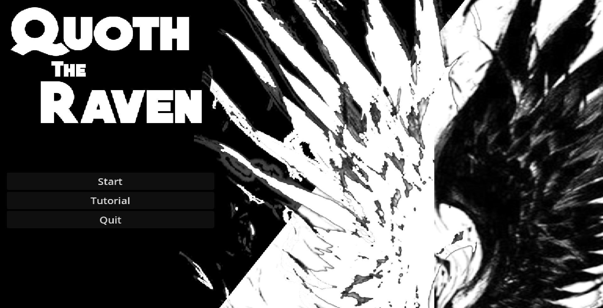
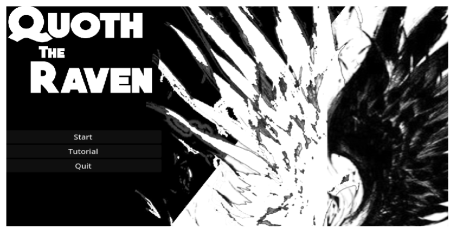
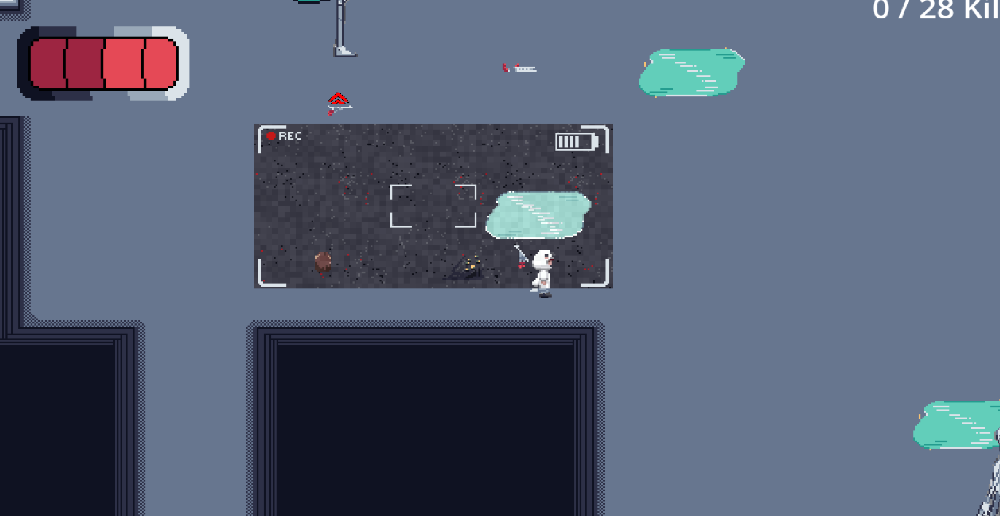
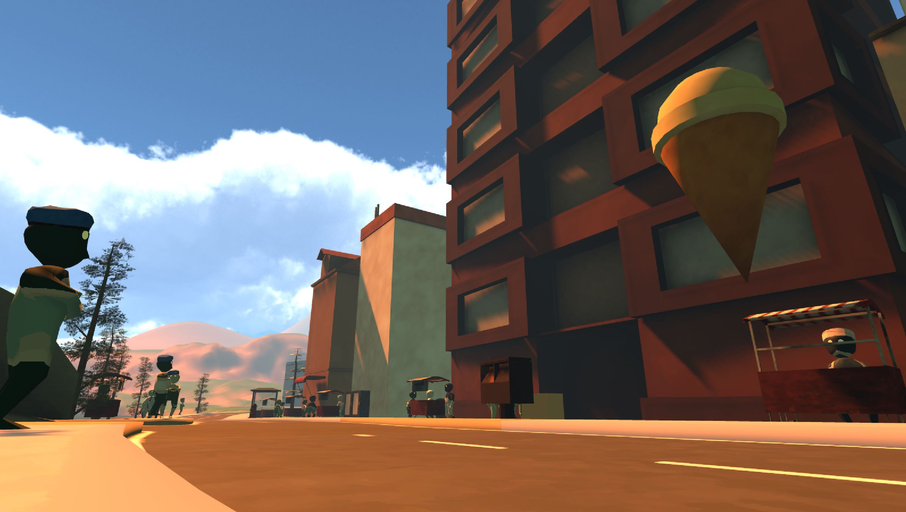
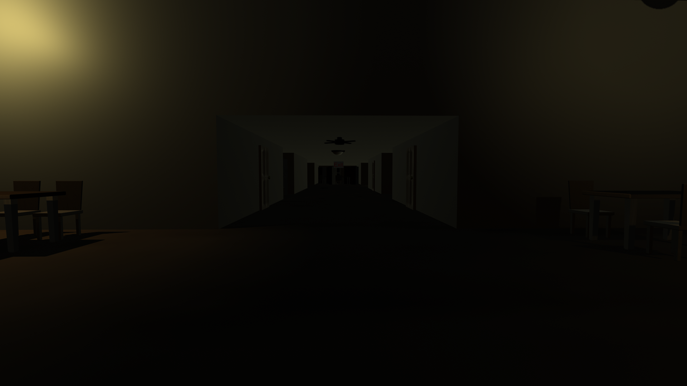
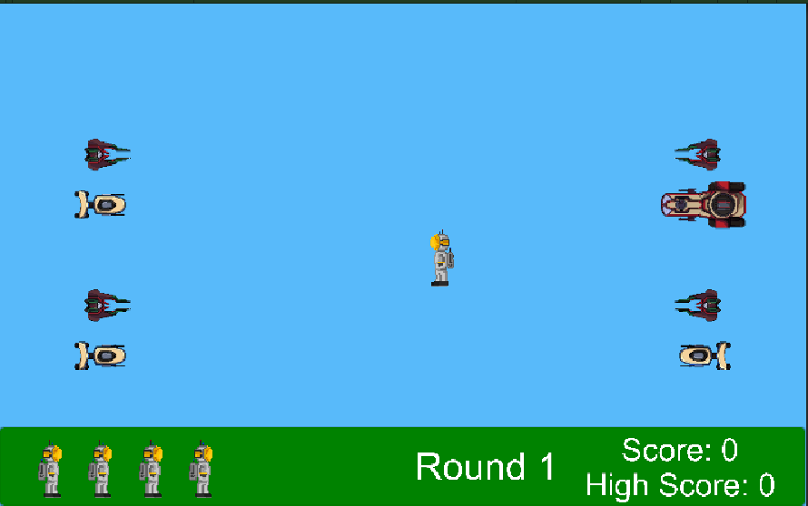
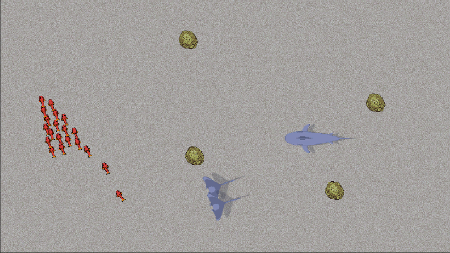
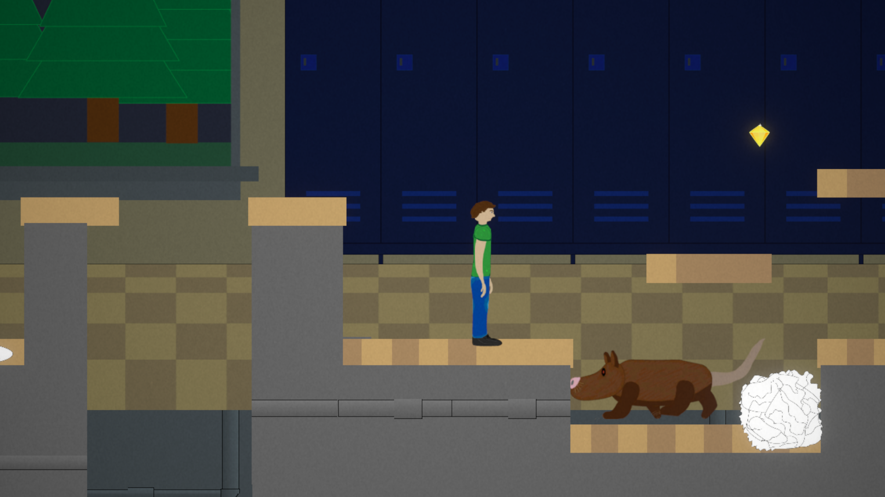
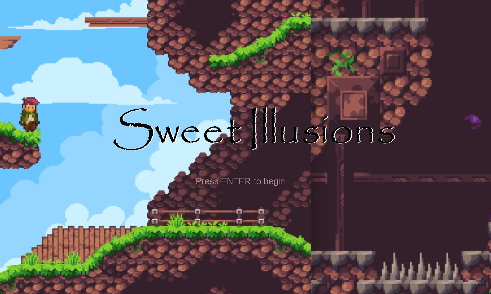
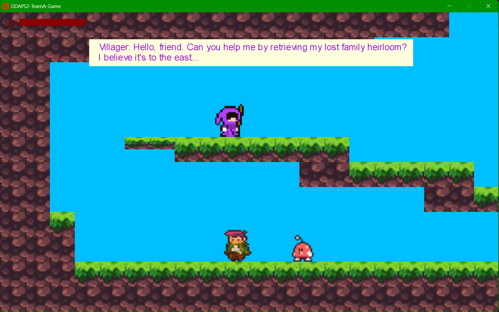

Main menu for Quoth the Raven: A game that I helped develop with a team of 4 other members in Godot, using C# and custom art











In 2024, from May 20th to August 1st, I was a part of an entrepreneurial co-op at RIT, where we had to build a playable game prototype,
called "Peaceland". The goal of Peaceland is to encourage people in post-conflict areas to be more empathetic to create peace, as well as
help show the player that the choices they make can have significant impacts on others. Working with some fellow game developers, I helped
work on the level design on the game, as well as creating some 3D assets to use. I also helped iron out any bugs that were found, and helped
to implement cutscenes and conversations. I was also part Rigger/Animator, along with being a Game Developer, and helped rig the
default character model, create some animations, and implement them into the game. I also did some voice acting and created some basic
dialogue for one of the fictional languages in the game, as well as some other background talking noises, although they have been archived and
are unused now. I have continued on the project as it turned into a Vertically Integrated Project (VIP) during the following fall 2024 semester.
I have helped with doing research on other games that have similar narratives, controls, and other gameplay/narrative elements, in order to see
how we should continue developing Peaceland, and what we can apply to the game. Then during the spring 2025 semester, development started on
creating a simple prototype for one gameplay scene in 2D, and will be used as a guideline for future work on developing Peaceland.
The link below goes to the RIT webpage where you can learn more about Peaceland, and how it has developed over time.
During the fall of 2025, I took PRFL.378 Composing for Video Games, where I learned how to compose music loops for games using a few techniques to help them not seem repetitive. Loops would be a few measures long, and be something that could easily be repeated. A couple techniques would be using horizontal resequencing to randomly switch between entirely different music loops, and then vertical layering to add randomness in variations of a single game loop.
This project was a culmination of previous assignments, by including the main loop of our 3 chosen game states in the last assignment and adding additional layers that could be switched on and off randomly. This would allow for loops in game music to not seem repetitive if they switched layers every now and then. I chose to include my loop for combat game music here, as it is the game state loop that I am the most fond of. It includes all the layers active at once first, then layers 1-2, layers 1-3, and layers 2-3. The core initial layers are at the bottom, showing how the layers are combined to create new variations of the same game state.
The final thing we learned was to compose game music that worked in time with a video clip of a game of our choice. Using a game that we chose, we had to compose music that would change between different sections based on certain actions taken during the game or specific events that the player triggered. My game clip was from Halo: Reach and featured the beginning gameplay of the mission Tip of the Spear. My goal was to emulate the tone and feel of the original music that plays during the mission, with the music being split into 4 sections. These sections names help identify where in the video they start playing, which should be fairly easy to distinguish when they each start. The final video with the gameplay and my music is below the audio files, and helps viewers to feel how the 4 music sections work together to create a seamless experience that is unique and familiar to the original music.